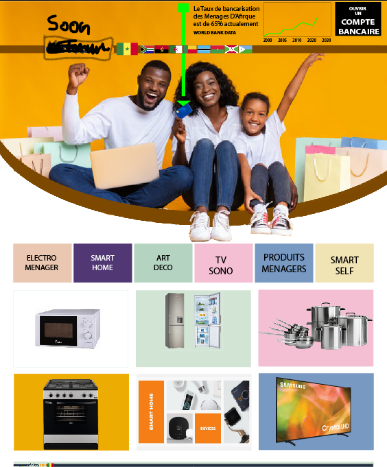
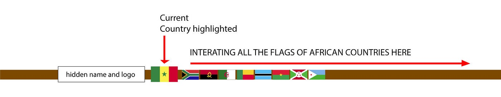

Feb 20
The Life-improving power of coding and diversity
A Code that makes our day-to-day life easier is simply a life-improving code. Like what mbenda explained in the Culture Class PodCast When she gave the example of Bukola this skilled woman software engineer who has made a video on youtube teaching people how to automate Spotify and how this clearly shows how easy coding can put many repetitive tasks out of our scope of care and giving us more time to enjoy life if for your opinion life embed such enjoyability in itself.
A whole pare of Automation solutions that are coming should be about making people life easier and there is no doubt that if they came to life at the same time when every one of us knows how to code them it will be very likely sure that we will be less and less hustled by daily activities rushes that we inherited from our industrialized society.
Inside enterprises, Improving Productivity is mostly the main usage of the coding and automation technologies that we are seeing today but improving people life with smart devices that could be simply coded by ourselves to help us when we need help is really a very interesting future to foresee given that every one of us will economically have the power for acquiring such kind of tech-enabled self-improvement tools. Listened to equity podcast last day remembered me of the many economic values that the revolution of personal computers has generated and captured and this value has been redistributed among us in terms of real money or possibilities of actions and reach and among these possibilities of actions is the accessibility of coding to humankind.
Knowing how to code is such a powerful power that also embed the danger of inhibiting our willingness to do handy things because every time the good coder does something she is constantly asking herself how she can program her computer to do this specific task in her place and what’s the best option between coding it and doing it manually. An example is me designing the User Experience of this new e-commerce platform that is trying to surf the wave of the next African viral economy and maybe conquer other corners of the world. when designing the menu component of this platform I decided to use all the flags of the African countries and started collecting them and putting them on the menu like this. For example, last I have been designing the frontend element of what is an ethnic e-commerce platform targeting African local consumers and africant immigrants. The frontend has this menu bar that you see here

here is the menu bar in question

With this menu taking all the flags of the 54 African countries and putting them here is a task that is time-consuming for a designer like me creating mockups of web platforms but hopefully the skilled coder that you are could do this fastly by programming a script that will take each flag and position it where it should be.
This is easy for a frontend engineer armed with a simple knowledge of javascript and CSS but a designer using Illustrator for designing how the web platform will look like this could take so much time without the help of a script. Adobe illustrator has a scripting language but you can use Python and its many modules about manipulating images for scripting the design of this menu like how I have already shown you how to design iteratively a book cover with python and image magic in this article entitled interactive design with python.
once hardcoded, change in design will be easier for you because if tomorrow your design should only care about European countries then changing the flags will be easy and fast. I will not be going into the details of how this will be coded but reading the article that I have shown you above or doing some search in google will help you achieve this goal of automating the design of this menu that shows flags of African countries.
Hopefully, you have skilled software engineers like bukola for showing you how to automate
Coding is life-improving because it allows us to gain time by automating tasks but how about diversity improvement?
Diversity is a broad concept that can stand for many things for example when it is about coding we could talk about the diversity of choices of tech stacks and languages. I have been writing about the diversity of programming languages in this article about the importance of having a source code in multiple languages because of how it could ignite creativity by allowing a larger set of people each preferring a given programming language to engage themselves in the source code of the solution and create new feature easily. Opensource solutions have benefited a lot from this concept of diversity of programming languages because many open-source solutions are accessible in many languages. For intellectual diversity in tech, you could read this article entitled the intellectual capital of tech startups and companies.
There are so many things to say about programming, tech, and diversity. I will be covering from time to time concepts about diversity in tech and even highlighting some solutions in this space of diversity, Gendered search engine an article that featured Mbenda Ndour was such kind of solution about diversity in tech. Waiting for the coming article that will go more in-depth in this topic of tech and diversity, you can listen to Mbenda talking on Culture Class Podcast
and Discover all the Episodes of Culture Class PodCast
Don't forget that people like Bukola are sharing their skills with You